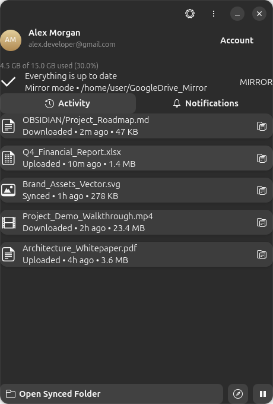

Stream files on-demand using FUSE3, mirror local folders for offline productivity, and access files from your other computers in a single unified virtual drive.

Experience the same feature set as the official Google Drive client on Windows and macOS, tuned for Ubuntu and GNOME.
Mount your entire Google Drive into ~/GoogleDrive without consuming local hard drive space. Files load on-demand with intelligent VFS chunk caching.
Keep a 100% offline mirror of your cloud files in ~/GoogleDrive_Mirror. Inotify watchers detect local changes and upload them instantaneously.
Directly matches Windows G:\Other computers\. Access folders backed up from your work laptop or home PC inside the same virtual drive.
Registered in system search with the official high-resolution Google Drive icon. Hit Super and type drive to search and launch.
Closing the window minimizes GDriveSync quietly to the system tray. Automatic silent autostart on system boot via --hidden.
Instant one-click access directly from your GNOME Files (Nautilus) sidebar, linking straight into your cloud drive.
Choose the right mode for your workflow, or switch between them anytime in Preferences.
Store all files in the cloud only. Browse your entire multi-terabyte Google Drive through ~/GoogleDrive with zero local disk footprint. Files stream transparently on-demand as you open them.
Experience the same unified folder structure as Windows G:\ drive. Access files backed up from your other laptops inside Linux.
Directly mapped to Google Drive folder ID 1AbC2dEf3GhIjKlMnOpQrStUvWxYz. Seamlessly syncs markdown notes, vault settings, images, and videos between Linux and your Windows laptop.
Take a look at the native Libadwaita user interface in action.
🔍 Click screenshot to view in full resolution
Run the automated one-click installer or use manual terminal commands.
git clone https://github.com/developertan/GDRIVSYNC.gitcd GDRIVSYNCchmod +x install.sh run.sh./install.sh./run.sh
~/GoogleDrive/Other computers/<Name>/ just like the official Windows Google Drive client.
google-drive.desktop into ~/.local/share/applications with official multi-resolution Google Drive icons installed into your system's hicolor theme. Pressing the Super key and searching "drive" or "Google Drive" shows the application with its official logo.